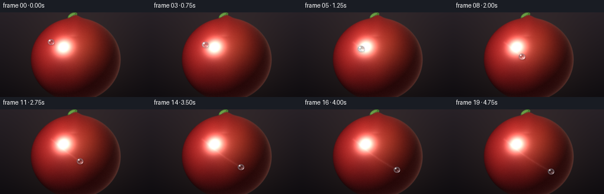
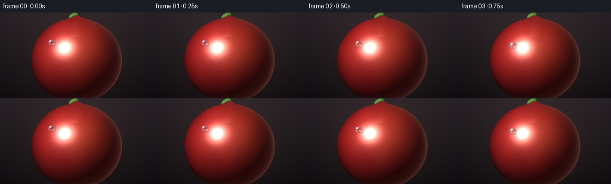

CODING AGENTS AS PIXEL WORLD MODELS
traex/Seed-2.1-Pro-0915 · phygen_038
点击播放 · 原生 RGB 像素
逐轮保存的候选
回放视频、检查图与代码变化。
每份候选均可单独播放。实际图片检查记录在下方工具轨迹中。
候选 01播放与检查图
点击播放 · 原生 RGB 像素


展开代码变化
--- 上一保存版本
+++ 本次保存版本
@@ -0,0 +1,225 @@
+"""Procedural text-to-video generator.
+
+Scene: a glistening dewdrop sliding across the smooth surface of a waxed
+apple. Everything is rendered analytically at 2x resolution with numpy and
+PIL, then downsampled to the required 256x144 frames.
+"""
+import numpy as np
+from PIL import Image, ImageDraw, ImageFilter
+
+import artifact_io
+
+# Output contract.
+W, H, N, FPS = 256, 144, 20, 4.0
+S = 2 # supersampling factor
+W2, H2 = W * S, H * S # 512 x 288
+
+# Apple geometry (high-res pixels).
+ACX, ACY = 256.0, 160.0
+ARX, ARY = 152.0, 142.0
+
+rng = np.random.default_rng(7)
+GRAIN = rng.normal(0.0, 1.6, (H2, W2)).astype(np.float32)
+
+
+def smoothstep(edge0, edge1, x):
+ t = np.clip((x - edge0) / (edge1 - edge0), 0.0, 1.0)
+ return t * t * (3.0 - 2.0 * t)
+
+
+def normalize(v):
+ v = np.asarray(v, dtype=np.float64)
+ return v / np.linalg.norm(v)
+
+
+def normalize_vec_field(x, y, z):
+ norm = np.sqrt(x * x + y * y + z * z)
+ return np.stack([x / norm, y / norm, z / norm], axis=-1)
+
+
+def make_background():
+ """Soft dark studio backdrop with a warm glow behind the apple."""
+ yy = np.linspace(0.0, 1.0, H2, dtype=np.float32)[:, None]
+ top = np.array([38.0, 32.0, 38.0], dtype=np.float32)
+ bottom = np.array([13.0, 11.0, 15.0], dtype=np.float32)
+ bg = top[None, None, :] * (1.0 - yy[..., None]) + bottom[None, None, :] * yy[..., None]
+ bg = np.repeat(bg, W2, axis=1)
+ xs = np.arange(W2, dtype=np.float32)[None, :]
+ ys = np.arange(H2, dtype=np.float32)[:, None]
+ glow = np.exp(-(((xs - ACX) ** 2 + (ys - (ACY - 10.0)) ** 2)) / (2.0 * 135.0 ** 2))
+ bg += glow[..., None] * np.array([22.0, 15.0, 9.0], dtype=np.float32)
+ return np.clip(bg, 0.0, 255.0)
+
+
+def draw_stem_and_leaf():
+ """Drawn on a transparent layer; the apple covers the stem's base."""
+ layer = Image.new("RGBA", (W2, H2), (0, 0, 0, 0))
+ d = ImageDraw.Draw(layer)
+ # Stem, slightly leaning.
+ d.line([(254, 34), (246, 4)], fill=(78, 50, 28, 255), width=9)
+ d.line([(251, 32), (245, 6)], fill=(112, 76, 44, 255), width=3)
+ layer = layer.filter(ImageFilter.GaussianBlur(0.6))
+ # Small leaf on its own rotated layer.
+ leaf = Image.new("RGBA", (W2, H2), (0, 0, 0, 0))
+ dl = ImageDraw.Draw(leaf)
+ dl.ellipse([228, 2, 262, 20], fill=(74, 122, 48, 255))
+ dl.ellipse([232, 4, 256, 14], fill=(108, 156, 70, 255))
+ dl.line([(232, 12), (260, 9)], fill=(60, 96, 40, 255), width=2)
+ leaf = leaf.rotate(28, center=(246, 11), resample=Image.BICUBIC)
+ layer = Image.alpha_composite(layer, leaf)
+ return np.asarray(layer, dtype=np.float32)
+
+
+def render_apple():
+ """Returns the composited background+apple image and the apple alpha."""
+ xs = np.arange(W2, dtype=np.float32)[None, :]
+ ys = np.arange(H2, dtype=np.float32)[:, None]
+ u = ((xs - ACX) / ARX).astype(np.float64)
+ v = ((ys - ACY) / ARY).astype(np.float64)
+ # Top dimple: pull the silhouette downward near the crown.
+ v_eff = v + 0.065 * np.exp(-(u / 0.11) ** 2) * (v < -0.55)
+ r = np.sqrt(u * u + v_eff * v_eff).astype(np.float32)
+ alpha = (1.0 - smoothstep(0.985, 1.015, r)).astype(np.float32)
+ z = np.sqrt(np.clip(1.0 - r * r, 0.0, 1.0)).astype(np.float64)
+
+ n = normalize_vec_field(u, v_eff, z)
+ light = normalize((-0.5, -0.55, 0.68))
+ view = np.array([0.0, 0.0, 1.0])
+ half = normalize(light + view)
+
+ ndl = np.clip(n[..., 0] * light[0] + n[..., 1] * light[1] + n[..., 2] * light[2], 0.0, 1.0)
+ ndh = np.clip(n[..., 0] * half[0] + n[..., 1] * half[1] + n[..., 2] * half[2], 0.0, 1.0)
+
+ # Base red palette with a warm blush and faint wax striping.
+ deep = np.array([108.0, 15.0, 22.0])
+ bright = np.array([208.0, 46.0, 36.0])
+ mix = 0.32 * ndl + 0.2 * z
+ stripe = 0.05 * np.sin(9.0 * u + 1.5) * np.sin(3.0 * v + 0.7)
+ mix = np.clip(mix + stripe, 0.0, 1.0)
+ color = deep[None, None, :] * (1.0 - mix[..., None]) + bright[None, None, :] * mix[..., None]
+ blush = 0.28 * np.exp(-(((u - 0.32) ** 2) / 0.30 + ((v + 0.28) ** 2) / 0.42))
+ orange = np.array([230.0, 102.0, 48.0])
+ color = color * (1.0 - blush[..., None]) + orange[None, None, :] * blush[..., None]
+
+ # Lambert shading plus gentle ambient occlusion toward the silhouette.
+ ambient = 0.22 + 0.10 * z
+ shade = ambient + 0.88 * ndl
+ color *= shade[..., None]
+
+ # Crisp wax specular and a broad soft sheen.
+ spec = np.power(ndh, 48.0) * 1.05 + np.power(ndh, 9.0) * 0.16
+ color += spec[..., None] * np.array([255.0, 242.0, 226.0])[None, None, :]
+
+ # Warm rim light on the back-right edge, darker falloff on the left.
+ rim = np.power(np.clip(1.0 - z, 0.0, 1.0), 2.6)
+ color += (rim * np.clip(0.45 + 0.55 * u, 0.0, 1.0))[..., None] * \
+ np.array([255.0, 178.0, 148.0])[None, None, :] * 0.38
+ color *= (1.0 - 0.22 * rim * np.clip(0.5 - 0.5 * u, 0.0, 1.0))[..., None]
+
+ color += GRAIN[..., None]
+ color = np.clip(color, 0.0, 255.0)
+
+ bg = make_background()
+ stem = draw_stem_and_leaf()
+ # Stem sits behind the apple crown.
+ bg = bg * (1.0 - stem[..., 3:4] / 255.0) + stem[..., :3] * (stem[..., 3:4] / 255.0)
+ frame = bg * (1.0 - alpha[..., None]) + color * alpha[..., None]
+ return np.clip(frame, 0.0, 255.0), alpha, r
+
+
+def drop_center(t):
+ """Graceful curved slide from the upper-left to the lower-right."""
+ te = t * t * (3.0 - 2.0 * t)
+ px = ACX + ARX * (-0.55 + 1.05 * te)
+ py = ACY + ARY * (-0.42 + 0.78 * te) + 8.0 * np.sin(np.pi * te)
+ return px, py
+
+
+def trail_mask(t):
+ """Glossy wet trail left behind the moving drop."""
+ mask = Image.new("L", (W2, H2), 0)
+ d = ImageDraw.Draw(mask)
+ steps = max(2, int(t * 60))
+ pts = [drop_center(i / steps * t) for i in range(steps + 1)]
+ d.line(pts, fill=210, width=10, joint="curve")
+ mask = mask.filter(ImageFilter.GaussianBlur(4))
+ core = Image.new("L", (W2, H2), 0)
+ dc = ImageDraw.Draw(core)
+ dc.line(pts, fill=150, width=3, joint="curve")
+ core = core.filter(ImageFilter.GaussianBlur(1.6))
+ return (np.asarray(mask, dtype=np.float32) / 255.0,
+ np.asarray(core, dtype=np.float32) / 255.0)
+
+
+def render_drop(frame, apple_alpha, t):
+ px, py = drop_center(t)
+ R = 11.0
+ h, w = frame.shape[:2]
+ x0 = max(0, int(px - R - 3))
+ x1 = min(w, int(px + R + 4))
+ y0 = max(0, int(py - R - 3))
+ y1 = min(h, int(py + R + 4))
+ lxs = np.arange(x0, x1, dtype=np.float32)[None, :]
+ lys = np.arange(y0, y1, dtype=np.float32)[:, None]
+ dx = lxs - px
+ dy = lys - py
+ ex = dx / R
+ ey = dy / (R * 0.92)
+ e = np.sqrt(ex * ex + ey * ey)
+
+ # Soft contact shadow, offset toward the lower-right.
+ q = ((dx - 2.6) / (R * 1.22)) ** 2 + ((dy - 3.4) / (R * 0.92)) ** 2
+ shadow = np.exp(-q * 1.7) * 0.32
+ region = frame[y0:y1, x0:x1]
+ region *= (1.0 - shadow[..., None])
+
+ # Refraction: invert/magnify what lies beneath the droplet.
+ sx = np.clip(np.rint(px - 0.85 * dx).astype(int), 0, w - 1)
+ sy = np.clip(np.rint(py - 0.85 * dy).astype(int), 0, h - 1)
+ refr = frame[sy, sx]
+ fresnel = 0.06 + 0.55 * np.clip(e, 0.0, 1.0) ** 3
+ sky = np.array([198.0, 210.0, 226.0], dtype=np.float32)
+ body = refr * (1.0 - fresnel[..., None]) + sky[None, None, :] * fresnel[..., None]
+ body *= 1.0 - 0.28 * smoothstep(0.82, 1.0, e)[..., None]
+
+ # Primary glint, secondary glint, and a lit rim on the lower-right.
+ glint1 = np.exp(-(((dx + 0.38 * R) / (0.22 * R)) ** 2 +
+ ((dy + 0.42 * R) / (0.22 * R)) ** 2))
+ glint2 = 0.35 * np.exp(-(((dx - 0.30 * R) / (0.16 * R)) ** 2 +
+ ((dy - 0.28 * R) / (0.16 * R)) ** 2))
+ ang = np.arctan2(dy, dx)
+ rim_bright = smoothstep(0.68, 0.98, e) * np.exp(-((ang - 0.6) ** 2) / 0.22) * 0.55
+ body += (glint1 * 0.95 + glint2 + rim_bright)[..., None] * \
+ np.array([255.0, 252.0, 244.0])[None, None, :]
+
+ drop_alpha = (1.0 - smoothstep(0.95, 1.05, e)) * apple_alpha[y0:y1, x0:x1]
+ region[:] = region * (1.0 - drop_alpha[..., None]) + body * drop_alpha[..., None]
+ frame[y0:y1, x0:x1] = region
+ return frame
+
+
+def main():
+ base, apple_alpha, _ = render_apple()
+ frames = []
+ for i in range(N):
+ t = i / (N - 1)
+ frame = base.copy()
+
+ wide, core = trail_mask(t)
+ wet = wide * apple_alpha
+ sheen = np.clip(frame * 1.13 + 12.0, 0.0, 255.0)
+ frame += wet[..., None] * (sheen - frame) * 0.26
+ frame += (core * apple_alpha)[..., None] * 24.0
+
+ frame = render_drop(frame, apple_alpha, t)
+ small = Image.fromarray(np.clip(frame, 0, 255).astype(np.uint8)).resize(
+ (W, H), Image.Resampling.LANCZOS)
+ frames.append(np.asarray(small, dtype=np.uint8))
+
+ frames = np.stack(frames, axis=0)
+ artifact_io.save(frames, ".")
+ print(f"Saved {frames.shape} video artifacts.")
+
+
+if __name__ == "__main__":
+ main()
可观测工具轨迹
实际执行的命令与返回图片。
命令 1exit 0
/bin/bash -lc 'ls -la && cat prompt.txt && echo "=====RULES=====" && cat GENERATION_RULES.md && echo "=====SPEC=====" && cat task_spec.json'
命令 2exit 0
/bin/bash -lc 'cat artifact_io.py && echo "=====PLAYER=====" && cat player_template.html && ls .tmp && python3 -c "import numpy, PIL; print(numpy.__version__, PIL.__version__)"'
命令 3exit 0
/bin/bash -lc 'cd . && python3 generate.py && ls -la'
保存候选 1 份；完成命令 3 次；可验证图片返回 0 张。原始 API 响应与完整日志保留在本地。